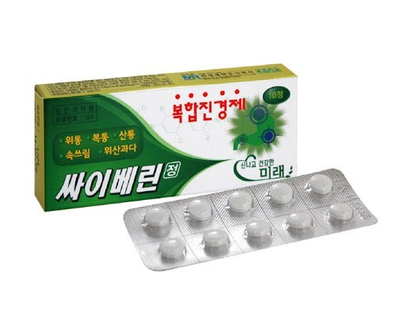
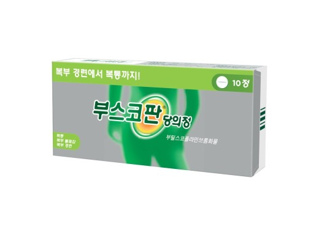
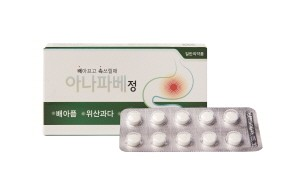
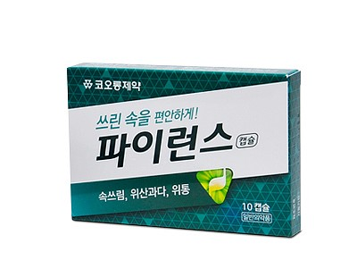

| 약 이미지 | 약 이름 | 약 성분 | 약 주요 효능,효과 | 약 가격 |
|---|---|---|---|---|
|  | 싸이베린정 | 디시클로민염산염, 파파베린염산염 | - 위통, 복통(배아픔), 산통, 위산과다, 속쓰림에 사용하는 진경제이다. 성인(만15세이상) : 1회 2정, 1일 2~3회, 만8세이상~만15세미만 : 1회 1정, 1일 2~3회, 식후 또는 식간에 복용한다. - 다만, 1일 2회 이상 복용시에는 4시간 이상의 간격을 두고 복용한다. |
3,000원 |
| 카베진코와알파정 | 당약가루, 메틸메티오닌설포늄염화물, 스코폴리아엑스3배산, 침강탄산칼슘, 비오디아스타제, 라파제AP12, 탄산수소나트륨, 탄산마그네슘, 자소엽건조엑스 | - 위부불쾌감, 위부팽만감, 위통, 위산과다, 속쓰림, 신트림, 과식, 체함, 소화불량, 소화촉진, 식욕부진, 구역, 구토에 사용하는 약품이다. |
4,000원 | |
|  | 부스코판당의정 | 부틸스코폴라민브롬화물 | - 경련 및 운동기능 항진 : 위ㆍ십이지장궤양, 식도경련, 유문연축, 위염, 장염, 장산통, 경련성 변비, 기능성 설사, 담낭염, 담관염, 담석증, 담도이상운동증, 담낭절제후의 후유증, 요로결석, 방광염, 월경곤란에 사용하는 약품이다. - 성인: 부틸스코폴라민브롬화물로서 1회 10-20㎎ 1일 3-5회 경구투여한다. - 연령, 증상에 따라 적절히 증감한다. - 복통 등 증상의 원인이 의학적으로 확인되지 않은 경우, 이 약을 계속 복용해서는 안 된다. |
3,000원 |
|  | 아나파베정 | 디시클로민염산염, 파파베린염산염 | 위통, 복통(배아픔), 산통, 위산과다, 속쓰림에 사용하는 약품이다. - 성인(만 15세 이상) : 1회 2정 1일 2 ~ 3회, 만 8세 이상 ~ 만 15세 미만 : 1회 1정 1일 2 - ~3회 식후 또는 식간에 복용한다. 다만, 1일 2회 이상 복용시에는 4시간 이상의 간격을 두고 복용한다. |
3,500원 |
| 이지정 | 디시클로민염산염 | 위·십이지장궤양, 위염, 대장염, 게실(곁주머니)염, 경련성 변비질환에서 경련이 완화 된다. - 성인 : 디시클로민염산염으로서 1회 10 ∼ 20 mg 1일 3 ∼ 4회 복용한다. - 2주 이내 증상이 개선되지 않거나 1일 80mg 미만의 용량에서 부작용이 나타나는 경우 복용을 중단해야 한다. |
3,500원 | |
| 스파메드정 | 디시클로민염산염, 파파베린염산염 | - 위통, 복통(배아픔), 산통, 위산과다, 속쓰림에 사용하는 약품이다. - 성인(만15세이상) : 1회 2정, 1일 2~3회, 만8세이상~만15세미만 : 1회 1정, 1일 2~3회, 식후 또는 식간에 복용한다. - 다만, 1일 2회 이상 복용시에는 4시간 이상의 간격을 두고 복용한다. |
4,000원 | |
|  | 파이런스캡슐 | 브롬화수소산스코폴라민, 아미노벤조산에틸, 파파베린염산염 | - 위통, 복통(배아픔), 산통, 위산과다, 속쓰림에 사용하는 약품이다. - 통상 성인(15세 이상) 1회 1캅셀, 1일 3회 복용한다. - 단, 복용간격은 4시간 이상으로 한다. |
3,500원 |